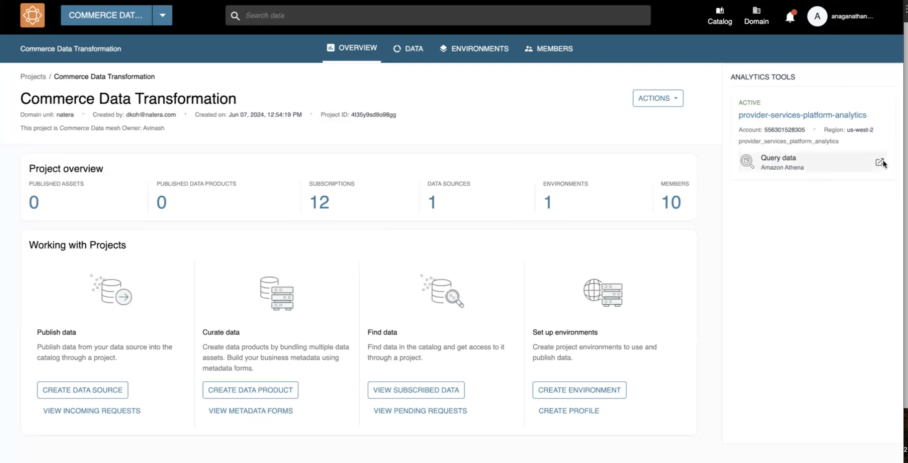
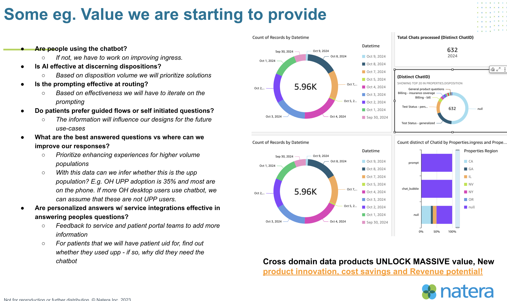

Welcome to the Natera Data Portal. This platform is designed to provide easy access to data and information with a smooth and intuitive experience. Scroll down for more details and interactive features.
Watch the video above to learn how to navigate the DataZone portal, including login steps, searching for data assets, accessing the data catalog, and visualizing data in QuickSight.
New Feature: Access New features such as Data lineage, Catalog, Queryability, PII filtering etc.
Introducing the ability to mark frequently used data assets as favorites! This feature allows users to quickly access their most important data without navigating through multiple sections.
Build data products to identify product gaps, measure success,manage excepotions etc.

Access real-time analytics across multiple domains including Commerce, Patient, and Clinical data. Unlock the potential behind every use case armed with data product, triggers and alerts to suit your product analytics or decisioning.
Data Products Overview

DataX, our AWS-powered data mesh, enables efficient data management and analytics for Natera's key domains, including commerce, fulfillment, and billing. DataX provides near-real-time insights, allowing teams to make informed decisions faster.
Commerce Data: Track patient service, clinic and physician service, and unified patient portal data.
Fulfillment Data: Analyze order processing, kit deliveries, and test management.
Billing Data: Access billing and finance insights for seamless operations.
Real-Time Analytics: Get immediate insights into ongoing operations to make informed decisions promptly.
Data Visualization: Utilize QuickSight to create interactive, insightful dashboards for various stakeholders.
Product Manager - Using DataX for Commercial product data needs and use cases including pillar project launches such as G64, wes.onX, tfMRD etc.
A Product Manager at Natera used DataX to analyze commerce data, including patient service records and clinic data. Using AWS Athena for querying and QuickSight for visualization, the manager identified trends in patient engagement, which led to a 10% improvement in service delivery efficiency.
Clinical PM - Enhancing Patient Outcomes, portal and offline targetting with Data Mesh
A Clinical PM leveraged the DataX mesh to explore patient data and streamline clinical workflows. By using interactive text to sql QuickSight dashboards, they were able to identify bottlenecks and inefficiencies in the patient journey. The insights led to a 15% reduction in response times and improved overall patient satisfaction.
Operations Manager - Optimizing MPX Data with patient opt ins, omnichannel enriched insifghts
An Operations Manager utilized DataX for MPX data analysis, using Athena for in-depth querying and QuickSight for visualization. This enabled the manager to optimize logistics and improve the fulfillment process. By analyzing the real-time data, operational delays were reduced by 20%, improving the overall efficiency of the MPX workflow.
Value Proposition of DataX for Natera
Data Discoverability & Collaboration
DataX empowers users to discover, access, and collaborate on data products across domains. With features like metadata tagging, data cataloging, and real-time access controls, users can easily find the data they need for their projects. This discoverability saves significant time, allowing stakeholders to focus on deriving insights and making impactful decisions.
Modernized Data Infrastructure
DataX provides a unified data infrastructure that supports infrastructure-as-code, automated environment provisioning, and self-service analytics with tools like AWS Athena and QuickSight. The modernized infrastructure ensures that data is always accessible, up-to-date, and ready for analysis, giving teams the power to act quickly based on real-time insights.
Seamless User Experience
Access all data assets through the DataZone portal, where you can query, visualize, and manage data efficiently. From provisioning environments to exploring dashboards, DataX ensures a smooth, user-friendly experience for all Natera teams. With one-click environment provisioning and easy access controls, users can get started with data exploration in no time.
Self-Service Capabilities
DataX provides self-service capabilities that enable different roles within the organization to manage their data needs independently. Users can provision environments, create dashboards, and analyze data without waiting for centralized teams, making the process more agile and responsive to business needs.